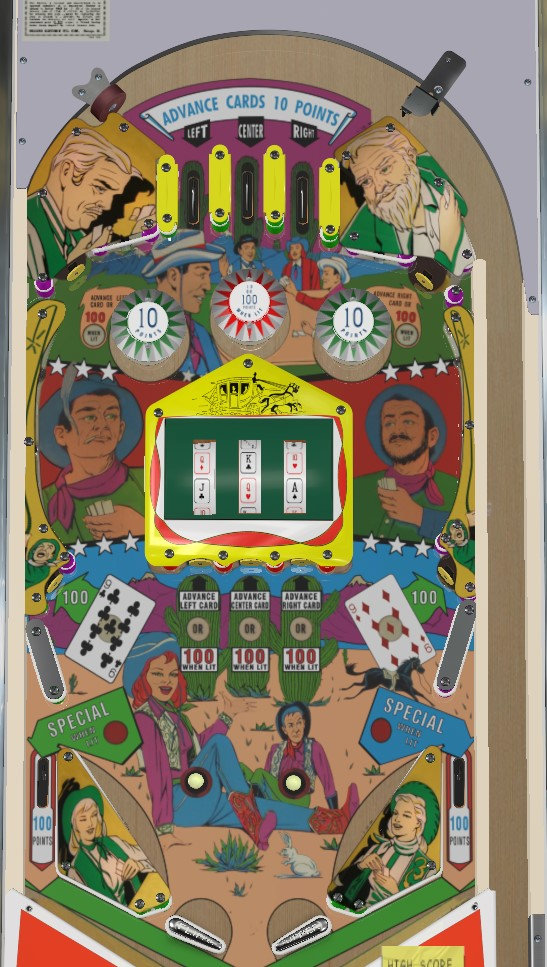

Full House is the replay version, where specials and won poker hands score a free game. Top Hand is the add-a-ball version, where specials and won poker hands can score an extra ball or 1,000 points. I do not believe there are any other differenes between versions.
Top lanes, top standup targets, and center standup targets advance the value on the reels shown on the playfield; Ace, King, Queen, Jack, Ten, and the center reel only also has a Wild. Advancing a card scores 10 points. If you have a three of a kind (including the Wild if applicable), the center and top standup targets will score 100 points instead of advancing a reel. The top lanes always advance a reel. The lower side standup targets light the 9s; lighting both will in turn light the center pop bumper for 100 points.
When the ball drains, the game selects a hand for the Dealer. The Dealer always has a three of a kind of Ace, King, Queen, Jack, or Ten, with bias toward Ace or King. If the player also has a three of a kind, the Dealer will also have a pair of 9s the vast majority of the time, forming a full house. If the player's poker hand consisting of the three cards on the playfield reels plus any collected 9s is better than the displayed Dealer hand, the player wins a free game (on Full House) or an extra ball or 1,000 points (on Top Hand). The randomness associated with the Dealer hand is based on the location of the end of game match mechanism and the 10s digit of the player's current score.
Making a full house (three of a kind from the reels and lighting both 9s standup targets) lights the out lanes alternately for Special, which gives the same award as if you had beaten the Dealer.
